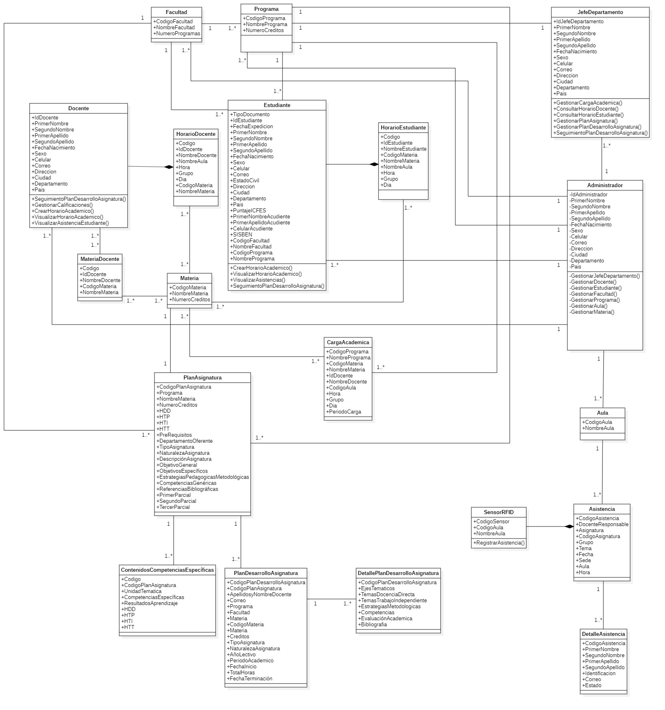
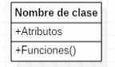
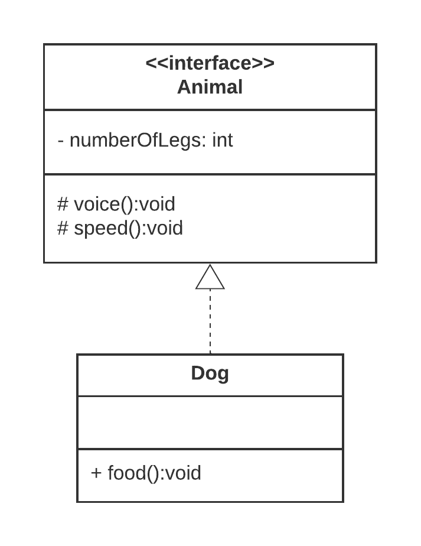
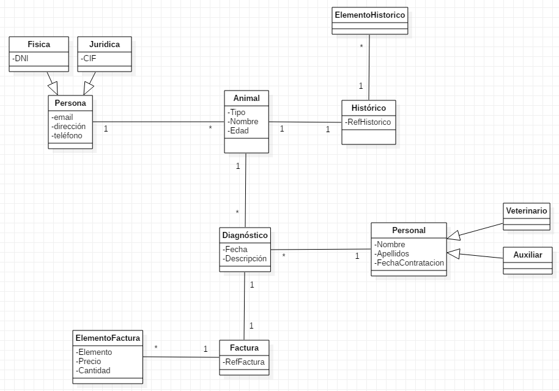

3.2.-Diagrama de clases
3.2 Diagrama de Clases en UML¶
1. Introducción¶
El diagrama de clases es uno de los diagramas incluidos en UML 2.5 clasificado dentro de los diagramas de estructura y, como tal, se utiliza para representar los elementos que componen un sistema de información desde un punto de vista estático.
📌 Punto clave: Este diagrama NO incluye la forma en que se comportan los elementos a lo largo de la ejecución. Esa función la cumplen los diagramas de comportamiento (diagrama de secuencia, casos de uso, etc.).
1.1. Características principales¶
- Orientado a objetos: Define las clases que se utilizarán en la fase de construcción
- Vista estática: Muestra la estructura, no el comportamiento dinámico
- Modelo lógico: Similar al diagrama Entidad-Relación (E/R) en bases de datos
- Fundamental: Es uno de los diagramas más importantes y utilizados en UML
1.2. Comparación con otros modelos¶
El diagrama de clases se puede equiparar, salvando las distancias, al famoso diagrama de modelo Entidad-Relación (E/R) (no recogido en UML). Ambos diagramas:
- Muestran el modelo lógico de los datos de un sistema
- Representan datos y su interacción
- Tienen una utilidad similar en sus respectivos contextos
2. Elementos del Diagrama de Clases¶
El diagrama UML de clases está formado por tres elementos principales:
- Clases
- Relaciones
- Interfaces
2.1. Clases¶
Las clases son el elemento principal del diagrama y representan una clase dentro del paradigma de la orientación a objetos.
2.1.1. ¿Qué representa una clase?¶
- Conceptos o entidades del «negocio»
- Define un grupo de objetos que comparten características, condiciones y significado
- Ejemplo: Animal, Persona, Mensaje, Expediente, Usuario, Producto...
2.1.2. ¿Cómo identificar clases?¶
💡 Técnica rápida: Busca los sustantivos que aparecen en el enunciado, en la idea de negocio o en el tema concreto.
⚠️ Importante: Es fundamental identificar correctamente estas clases. Si no se hace bien, habrá problemas en etapas posteriores, obligando a rehacer el análisis y perdiendo trabajo.
2.2. Estructura de una Clase¶
Una clase está compuesta por tres elementos:
- Nombre de la clase
- Atributos
- Métodos/Funciones
2.2.1. Representación gráfica¶
La clase se representa con una caja dividida en tres zonas mediante líneas horizontales:

┌─────────────────────────┐
│ Nombre de Clase │ ← 1ª zona: Nombre
├─────────────────────────┤
│ Atributos │ ← 2ª zona: Atributos
├─────────────────────────┤
│ Métodos │ ← 3ª zona: Métodos
└─────────────────────────┘
2.3. Zona 1: Nombre de la Clase¶
La primera zona contiene el nombre de la clase, y se escribe siguiendo estas reglas:
- Se escribe en la primera zona de la caja
- Clases abstractas: El nombre se escribe en cursiva
- Convenio: Primera letra en mayúscula (PascalCase)
2.4. Zona 2: Atributos¶
En la segunda zona se escriben los atributos de la clase, uno por línea. El formato puede ser:
-
Formato oficial:
-
Formato simplificado (común):
o incluso solo:
Ejemplo:
2.5. Zona 3: Métodos¶
En la tercera zona se escriben los métodos o funciones de la clase, también uno por línea. El formato puede ser:
-
Formato oficial:
-
Formato simplificado (común):
Ejemplo:
2.6. Visibilidad¶
Tanto los atributos como los métodos incluyen un símbolo que indica su visibilidad:

| Símbolo | Visibilidad | Descripción |
|---|---|---|
+ |
Pública | Se puede acceder desde cualquier lugar de la aplicación |
- |
Privada | Solo accesible desde la misma clase |
# |
Protegida | Accesible desde la misma clase o clases derivadas (herencia) |
~ |
Paquete | Accesible desde clases del mismo paquete (menos común) |
/ |
Derivado | Atributo calculado a partir de otros (menos común) |
Nota: Los tres primeros (
+,-,#) son los más comunes y universales.
2.7. Ejemplo Completo de Clase¶

┌──────────────────────────────────────┐
│ Producto │
├──────────────────────────────────────┤
│ - idProducto : Int │
│ - nombre : String │
│ - precio : Double │
│ - stock : Int │
├──────────────────────────────────────┤
│ + Producto(nombre, precio) │
│ + getNombre() : String │
│ + setPrecio(precio: Double) : Unit │
│ + hayStock() : Boolean │
│ + calcularDescuento(porcentaje: Double) : Double │
└──────────────────────────────────────┘
2.8. Miembros Estáticos¶
Los atributos o métodos estáticos se representan subrayando su nombre.
Definición: Una característica estática es compartida por toda la clase y no se instancia para cada objeto.
Ejemplo:
┌──────────────────────────────────────┐
│ Contador │
├──────────────────────────────────────┤
│ - <u>numeroInstancias : Int</u> │ ← Estático (subrayado)
│ - id : Int │ ← No estático
├──────────────────────────────────────┤
│ + <u>getNumeroInstancias() : Int</u> │ ← Estático (subrayado)
│ + getId() : Int │ ← No estático
└──────────────────────────────────────┘
En Kotlin:
class Contador {
private val id: Int = ++numeroInstancias
companion object {
private var numeroInstancias: Int = 0
fun getNumeroInstancias(): Int = numeroInstancias
}
}
3. Relaciones¶
Una relación identifica una dependencia entre clases. Puede ser:
- Entre dos o más clases (más común)
- De una clase hacia sí misma - dependencia reflexiva (menos común)
Las relaciones se representan con líneas que unen las clases. El tipo de línea varía según el tipo de relación.

3.1. Propiedades de las Relaciones¶
Cada relación puede tener las siguientes propiedades:
3.1.1. Multiplicidad (Cardinalidad)¶
Indica el número de elementos de una clase que participan en una relación.

| Notación | Significado |
|---|---|
1 |
Exactamente uno |
0..1 |
Cero o uno |
* o 0..* |
Cero o muchos |
1..* |
Uno o muchos (al menos uno) |
n |
Exactamente n (número específico) |
m..n |
Desde m hasta n |
3.1.2. Nombre de la Asociación¶
Se puede escribir una indicación que ayuda a entender la relación. Suelen utilizarse verbos.
Ejemplo: "Una empresa contrata a n empleados"
3.1.3. C. Rol¶
Indica el papel que juega cada clase en la relación.
4. Tipos de Relaciones¶
4.1. Asociación¶
Definición: Representa una dependencia semántica. Es el tipo de relación más común y general.
Representación: Línea continua simple que une las clases.

Ejemplo: "Una mascota pertenece a una persona"
En Kotlin:
class Persona(val nombre: String) {
private val mascotas: MutableList<Mascota> = mutableListOf()
fun agregarMascota(mascota: Mascota) {
mascotas.add(mascota)
}
}
class Mascota(val nombre: String, val dueno: Persona)
4.2. Agregación¶
Definición: Representa una relación jerárquica donde un objeto es parte de otro, pero puede existir independientemente.
Representación: Línea con un rombo vacío en la clase contenedora.

Ejemplo: "Las mesas están formadas por tablas de madera y tornillos"
Nota: El tornillo puede formar parte de más objetos (silla, estantería...), por lo que tiene existencia independiente.
En Kotlin:
class Mesa {
private val tornillos: List<Tornillo> = listOf()
}
class Tornillo(val tipo: String) {
// Puede existir sin estar en una mesa
}
4.3. Composición¶
Definición: Representa una relación jerárquica donde las partes NO pueden existir sin el todo. Es una forma más fuerte de agregación.
Representación: Línea con un rombo relleno en la clase contenedora.

Ejemplo: "Un automóvil está compuesto por un motor"
Nota: El motor es parte integral del automóvil. Si se destruye el automóvil, el motor también deja de existir en este contexto.
En Kotlin:
class Automovil {
private val motor: Motor = Motor() // Creado dentro
inner class Motor {
// Motor como clase interna
// No puede existir sin el Automovil
}
}
Diferencia clave entre Agregación y Composición:
| Agregación | Composición |
|---|---|
| ◇ Rombo vacío | ♦ Rombo relleno |
| Las partes pueden existir independientemente | Las partes NO existen sin el todo |
| Relación débil | Relación fuerte |
| Ejemplo: Mesa-Tornillo | Ejemplo: Automóvil-Motor |
4.4. Herencia (Generalización/Especialización)¶
Definición: Representa una relación de tipo "es un". La clase hija hereda características de la clase padre.
Representación: Línea con un triángulo vacío apuntando a la superclase.

Ejemplo: "Un perro es un animal"
En Kotlin:
open class Animal(val nombre: String) {
open fun hacerSonido() {
println("Sonido de animal")
}
}
class Perro(nombre: String) : Animal(nombre) {
override fun hacerSonido() {
println("Guau!")
}
}
4.5. Dependencia¶
Definición: Indica que una clase usa temporalmente otra clase. Es la relación más débil.
Representación: Línea discontinua con flecha.

Ejemplo: "Una clase usa un servicio externo"
En Kotlin:
import kotlin.math.pow
class Calculadora {
fun calcularPotencia(base: Double, exponente: Double): Double {
return base.pow(exponente) // Usa Math temporalmente
}
}
Características:
- No mantiene una referencia permanente
- Uso temporal o puntual
- Puede ser por parámetro, variable local, etc.
4.6. Implementación (Realización)¶
Definición: Representa que una clase implementa una interfaz o clase abstracta.
Representación: Línea discontinua con triángulo vacío.

Ejemplo: "Una clase implementa una interfaz"
┌───────────────┐
│<<interface>> │
│ IVolador │
└───────────────┘
△
┆
┌────┴────┐
│ Avion │
└─────────┘
En Kotlin:
interface IVolador {
fun volar()
fun aterrizar()
}
class Avion : IVolador {
override fun volar() {
println("El avión está volando")
}
override fun aterrizar() {
println("El avión está aterrizando")
}
}
4.7. Resumen de Relaciones¶
| Relación | Símbolo | Descripción | Ejemplo |
|---|---|---|---|
| Asociación | ─── |
Relación general | Persona - Mascota |
| Agregación | ◇─── |
"Tiene un" (independiente) | Mesa - Tornillo |
| Composición | ♦─── |
"Es parte de" (dependiente) | Coche - Motor |
| Herencia | ───▷ |
"Es un" | Perro - Animal |
| Dependencia | - - → |
Uso temporal | Calculadora - Math |
| Implementación | - - ▷ |
Implementa interfaz | Avion - IVolador |
5. Consejos y Mejores Prácticas¶
Para crear diagramas de clases efectivos, es importante seguir ciertas recomendaciones:
5.1. División de Diagramas¶
Recomendado: Dividir diagramas grandes en otros más pequeños que se puedan vincular.
Evitar: Crear diagramas gigantes e incoherentes.
Razón: Los diagramas tienden a volverse incoherentes a medida que crecen.
5.2. Niveles de Detalle¶
Lo ideal en cuanto a los niveles de detalle es:
- Vista de alto nivel: Usar notación simple de clases
- Vista detallada: Crear diagramas separados según necesidad
- Vinculación: Los diagramas detallados pueden vincularse a los de alto nivel
5.3. Claridad Visual¶
Hacer:
- Evitar que las líneas se crucen (en la medida de lo posible)
- Usar colores para agrupar módulos comunes
- Mantener una distribución ordenada
Evitar:
- Líneas que se superponen excesivamente
- Diagramas abarrotados
- Mezclar demasiados conceptos en un solo diagrama
5.4. Uso de Color¶
Usar diferentes colores para diferentes grupos de clases:
- 🔵 Azul: Clases de modelo/dominio
- 🟢 Verde: Clases de servicios
- 🟡 Amarillo: Clases de utilidades
- 🔴 Rojo: Clases de excepciones
Esto ayuda al lector a diferenciar entre los diversos grupos.
6. Ejemplos Completos de Diagramas de Clases¶
6.1. Clínica Veterinaria¶

Clases principales:
- Cliente
- Mascota
- Veterinario
- Cita
- Tratamiento
6.2. Zoológico¶

Clases principales:
- Animal
- Hábitat
- Cuidador
- Visitante
- Recinto
6.3. Tienda¶

Clases principales:
- Producto
- Cliente
- Pedido
- Categoría
- Pago
6.4. Gestión de Biblioteca¶

Clases principales:
- Libro
- Usuario
- Préstamo
- Autor
- Editorial
6.5. Centro Educativo¶

Clases principales:
- Estudiante
- Profesor
- Curso
- Matrícula
- Calificación
7. Ejemplo Detallado: Tienda Online¶
A continuación, un ejemplo detallado de las clases con sus atributos para un sistema de tienda online:
7.1. Clase Usuario¶
class Usuario(
val idUsuario: Int,
var nombre: String,
var correoElectronico: String,
private var contraseña: String,
var direccion: String,
var metodoDePago: String
) {
fun validarCredenciales(pass: String): Boolean {
return contraseña == pass
}
}
Atributos:
idUsuario: Identificador único del usuarionombre: Nombre completo del usuariocorreoElectronico: Dirección de correo electrónicocontraseña: Contraseña del usuario (privada)direccion: Dirección de envíometodoDePago: Método de pago preferido
7.2. Clase Producto¶
class Producto(
val idProducto: Int,
var nombre: String,
var descripcion: String,
var precio: Double,
var stock: Int
) {
fun hayStock(): Boolean {
return stock > 0
}
fun reducirStock(cantidad: Int) {
if (cantidad <= stock) {
stock -= cantidad
}
}
}
Atributos:
idProducto: Identificador único del productonombre: Nombre del productodescripcion: Descripción detalladaprecio: Precio del productostock: Cantidad disponible en inventario
7.3. Clase Carrito de Compras¶
class CarritoCompras(
val idCarrito: Int,
val usuario: Usuario
) {
private val productos: MutableList<ProductoCarrito> = mutableListOf()
var subtotal: Double = 0.0
private set
var impuestos: Double = 0.0
private set
fun agregarProducto(producto: Producto, cantidad: Int) {
productos.add(ProductoCarrito(producto, cantidad))
calcularSubtotal()
}
private fun calcularSubtotal() {
subtotal = productos.sumOf { it.producto.precio * it.cantidad }
impuestos = subtotal * 0.21 // IVA del 21%
}
fun getTotal(): Double = subtotal + impuestos
}
data class ProductoCarrito(val producto: Producto, val cantidad: Int)
Atributos:
idCarrito: Identificador único del carritoproductos: Lista de productos añadidossubtotal: Monto total antes de impuestosimpuestos: Monto total de impuestos
7.4. Clase Orden de Compra¶
class OrdenCompra(
val idOrden: Int,
val usuario: Usuario,
productos: List<ProductoCarrito>
) {
private val productos: List<ProductoCarrito> = productos.toList()
var subtotal: Double = 0.0
private set
var impuestos: Double = 0.0
private set
var envio: Double = 0.0
var total: Double = 0.0
private set
init {
calcularTotales()
}
private fun calcularTotales() {
subtotal = productos.sumOf { it.producto.precio * it.cantidad }
impuestos = subtotal * 0.21
total = subtotal + impuestos + envio
}
}
Atributos:
idOrden: Identificador único de la ordenproductos: Lista de productos compradossubtotal: Monto antes de impuestos y envíoimpuestos: Monto de impuestosenvio: Costo de envíototal: Monto total final
7.5. Clase Categoría¶
class Categoria(
val idCategoria: Int,
var nombre: String
) {
private val productos: MutableList<Producto> = mutableListOf()
fun agregarProducto(producto: Producto) {
productos.add(producto)
}
fun getProductos(): List<Producto> = productos.toList()
}
Atributos:
idCategoria: Identificador único de la categoríanombre: Nombre de la categoría
7.6. Clase Comentarios¶
class Comentario(
val idComentario: Int,
val producto: Producto,
val usuario: Usuario,
var comentario: String,
val fecha: Date
) {
var calificacion: Int = 0
set(value) {
field = if (value in 1..5) value else 0
}
}
Atributos:
idComentario: Identificador único del comentarioproducto: Referencia al productousuario: Usuario que escribió el comentariocomentario: Contenido del comentariofecha: Fecha de creacióncalificacion: Puntuación del 1 al 5
7.7. Diagrama de Clases Simplificado¶
┌─────────────┐ ┌──────────────┐ ┌────────────────┐
│ Usuario │1────* │CarritoCompras│1────* │ProductoCarrito │
└─────────────┘ └──────────────┘ └────────────────┘
│1 │*
│ │
│1 │
┌─────────────┐ ┌────────────────┐
│OrdenCompra │*────────────────────────────*│ Producto │
└─────────────┘ └────────────────┘
│*
│
│*
┌────────────────┐
│ Categoria │
└────────────────┘
8. Herramientas para Crear Diagramas de Clases¶
Existen diversas herramientas para crear diagramas de clases UML, tanto online como de escritorio. El uso de estas herramientas facilita la creación, edición y mantenimiento de los diagramas, pero a la vez también es posible dibujarlos a manos, siendo algo mas rápido para bocetos iniciales.
Existen otras herramientas declarativas que permiten generar diagramas de clases a partir del código fuente, lo que puede ser útil para documentación automática y que al final nos ahorra tiempo. Una de ellas es PlantUML, que permite crear diagramas a partir de un lenguaje de texto sencillo.
8.1. Herramientas Online¶
- Draw.io (diagrams.net): Gratuito, sin registro
- Lucidchart: Versión gratuita limitada
- Creately: Plantillas predefinidas
- PlantUML Online: Diagramas mediante texto
8.2. Herramientas de Escritorio¶
- Visual Paradigm: Profesional, versión community gratuita
- StarUML: Open source
- Enterprise Architect: Profesional de pago
- Umbrello: Para Linux, open source
8.3. Integradas en IDEs¶
- IntelliJ IDEA: Plugin de diagramas UML
- Eclipse: Papyrus UML
- Visual Studio: Class Designer
- NetBeans: UML plugin
8.4. Generación desde Código¶
- PlantUML: Genera diagramas desde texto
- Mermaid: Diagramas en markdown
- IntelliJ IDEA: Genera diagramas desde código Kotlin/Java
9. Conclusiones¶
- El diagrama de clases es fundamental en el diseño orientado a objetos
- Representa la estructura estática del sistema
- Es el diagrama más utilizado en el desarrollo de software
- Permite visualizar clases, atributos, métodos y relaciones
- Facilita la comunicación entre analistas, desarrolladores y clientes
- Sirve como documentación del sistema
- Es la base para la implementación del código
10. Puntos Clave para Recordar¶
Los siguientes puntos son esenciales para crear diagramas de clases efectivos:
Hacer:
- Identificar clases a partir de sustantivos
- Usar la visibilidad apropiada (+, -, #)
- Elegir el tipo de relación correcto
- Mantener diagramas simples y claros
- Dividir diagramas grandes en módulos
Evitar:
- Crear diagramas demasiado complejos
- Mezclar aspectos estáticos y dinámicos
- Olvidar la multiplicidad en las relaciones
- Cruzar líneas innecesariamente
- Incluir detalles de implementación prematuros